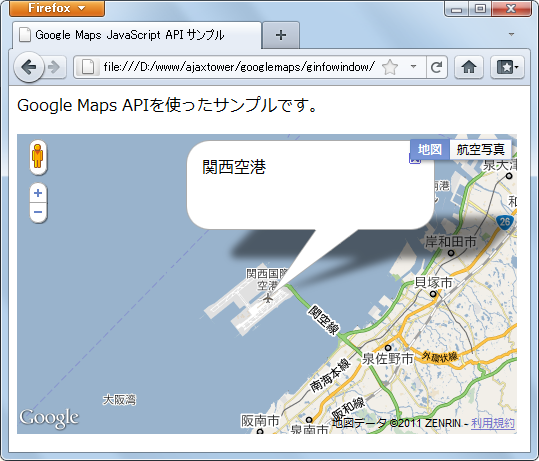
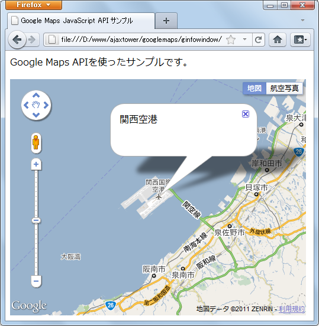

情報ウィンドウの作成
地図上やマーカーなどをクリックした時にその地点に関する情報を表示するために使用されるのが情報ウィンドウです。実際は次のような形で地図上で表示されます。

ではまず情報ウィンドウを表すInfoWindowクラスのオブジェクトを作成します。コンストラクタ関数は次のように定義されています。
InfoWindow(opts?:InfoWindowOptions)
指定されたオプションを使用して情報ウィンドウを作成します。情報ウィンドウは、オプ ションでの指定に応じて、地図上の特別な位置やマーカーの上に配置することができます。 地図の自動移動が無効になっていない限り、情報ウィンドウを開くと、情報ウィンドウが 地図内に表示されるように地図が移動します。情報ウィンドウを作成した後、open を呼び 出して地図上に表示させる必要があります。ユーザーは情報ウィンドウの閉じるボタン [X] をクリックして地図から情報ウィンドウを削除できます。またはデベロッパーが close() を呼び出しても同じことです。
オプションである1番目の引数には情報ウィンドウに表示するテキストや位置などを設定するために使用するInfoWindowOptionsオブジェクトを指定します。引数を省略した場合は用意されているメソッドなどを使って設定して下さい。
実際には次のように記述します。
var infowindow1 = new google.maps.InfoWindow();
var infowindow2 = new google.maps.InfoWindow({
content: 'text',
});
1つ目は引数を省略したもの。2つ目はInfoWindowOptionsオブジェクトを指定したものです。
InfoWindowOptionsオブジェクト
情報ウィンドウは情報を表示するためなので情報ウィンドウ内に表示するコンテンツを指定する必要があります。また情報ウィンドウを表示する座標も指定しなければなりません。
このような情報ウィンドウに必要な設定を記述するために使用するのがInfoWindowOptionsオブジェクトです。このオブジェクトには次のようなパラメータが定義されています。
| プロパティ | タイプ | 説明 |
|---|---|---|
| content | string | Node | 情報ウィンドウで表示するコンテンツ。これは HTML 要素、プレーン テキストの文字列、あるいは HTML を含む文字列を指定できます。情報ウィンドウのサイズはコンテンツに応じて調整されます。コンテンツのサイズを明示的に設定するには、コンテンツをそのサイズの HTML 要素となるように設定します。 |
| disableAutoPan | boolean | 情報ウィンドウを開くときの地図の自動移動を無効にします。デフォルトでは、情報ウィンドウを開いたときにウィンドウ全体が表示されるように地図が移動します。 |
| maxWidth | number | 情報ウィンドウの最大幅（コンテンツの幅に非依存）。この値は、呼び出しの前に設定します。コンテンツを変更するときに最大幅を変更するには、close、setOptions を呼び出してから、これを開きます。 |
| pixelOffset | Size | 情報ウィンドウが固定されている地理的座標の地図上の地点を基準とした、情報ウィンドウの先端までのピクセル単位でのオフセット値。アンカーを持つ情報ウィンドウを開くときは、pixelOffset はアンカーが結び付けられている領域の上-中央の位置から計算します。 |
| position | number | すべての情報ウィンドウが zIndex 順に表示され、高い値の情報ウィンドウは低い値の情報ウィンドウより前に表示されます。デフォルトでは、情報ウィンドウは緯度に従って表示され、低い緯度の情報が高い緯度の情報ウィンドウより前に表示されます。情報ウィンドウは常にマーカーの前に表示されます。 |
必須となっているプロパティはありませんが、「content」プロパティに対して情報ウィンドウで表示するコンテンツは指定して置く必要があります。
また情報ウィンドウをマーカーなどのアンカーと呼ばれるものに対して設定する場合を除いて「positon」プロパティに対して情報ウィンドウを表示する座標を指定する必要があります。
実際には次のようにオブジェクトを作成します。
var latlng = new google.maps.LatLng(35.539001,134.228468);
var iwopts = {
content: 'Hello',
positon: latlng
};
作成したオブジェクトリテラルを引数に指定してInfoWindowクラスのオブジェクトを作成します。
var latlng = new google.maps.LatLng(35.539001,134.228468);
var iwopts = {
content: 'Hello',
positon: latlng
};
var infowindow = new google.maps.InfoWindow(iwopts);
これで表示するコンテンツと座標が設定された情報ウィンドウが作成されました。
InfoWindowOptionsオブジェクトの再設定
InfoWindowクラスのオブジェクトを作成する時にInfoWindowOptionsオブジェクトを指定しましたが、InfoWindowクラスのオブジェクトを作成した後で、改めて別のInfoWindowOptionsオブジェクトを設定することもできます。
再度設定を行うにはInfoWindow クラスで用意されている「setOptions」メソッドを使います。
setOptions(options:InfoWindowOptions)
--
引数に再設定したいInfoWindowOptionsオブジェクトを指定して下さい。実際には次のように使用します。
var latlng = new google.maps.LatLng(35.539001,134.228468);
var iwopts1 = {
content: 'Hello',
positon: latlng
};
var infowindow = new google.maps.InfoWindow(iwopts1);
var iwopts2 = {
content: 'bye',
};
infowindow.setOptions(iwopts2);
情報ウィンドウは作成するだけでは表示されません。表示するには情報ウィンドウを開く必要があります。開いたり閉じたりする方法は次のページで確認します。
サンプルコード
では実際に試してみます。
function initialize() {
var latlng = new google.maps.LatLng(34.434877,135.24421);
var opts = {
zoom: 11,
center: latlng,
mapTypeId: google.maps.MapTypeId.ROADMAP
};
var map = new google.maps.Map(document.getElementById("map_canvas"), opts);
var infowindow = new google.maps.InfoWindow({
content: '関西空港',
position: latlng
});
infowindow.open(map);
}
<!DOCTYPE html "-//W3C//DTD XHTML 1.0 Strict//EN"
"http://www.w3.org/TR/xhtml1/DTD/xhtml1-strict.dtd">
<html xmlns="http://www.w3.org/1999/xhtml">
<head>
<meta http-equiv="content-type" content="text/html; charset=utf-8"/>
<title>Google Maps JavaScript API サンプル</title>
<script type="text/javascript"
src="http://maps.google.com/maps/api/js?sensor=false"></script>
<script src="./js/code1_1.js" type="text/javascript"></script>
</head>
<body onload="initialize()">
<p>Google Maps APIを使ったサンプルです。</p>
<div id="map_canvas" style="width:500px; height:400px"></div>
</body>
</html>
ブラウザで上記ページを開くと次のように表示されます。

このページの最初で表示したものと同じです。
( Written by Tatsuo Ikura )

著者 / TATSUO IKURA
初心者～中級者の方を対象としたプログラミング方法や開発環境の構築の解説を行うサイトの運営を行っています。